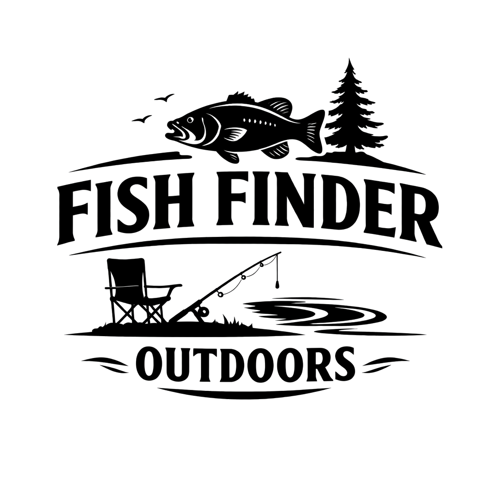

Founding partner offerPut your local fishing business in front of anglers planning their next trip.
Fish Finder Outdoors reaches visitors while they are searching waters, access information, official sources, and fishing updates—not while they are casually scrolling.
$49per month for the first three founding partners
What your placement includes
- Business logo, name, short description, town, and clickable link.
- Local Fishing Partner placement on the location-finder homepage.
- Placement on a relevant state location page when appropriate.
- One sponsor mention per month on an FFO social account.
- Basic outbound-click tracking so the placement can be measured.
Best fit for
- Bait and tackle shops
- Fishing guides and charter services
- Campgrounds, marinas, and boat rentals
- Outdoor stores and fishing-related services
- Local businesses that benefit from anglers traveling through the area
Honest promise: FFO offers targeted visibility and measurable clicks. It does not promise a specific number of sales.
Local Fishing Partner
Your Business Could Be Featured Here
Your logo, business description, location, and Visit Sponsor button appear in this space.
Contact Mountain Dog Enterprises
← Return to Fishing Locations